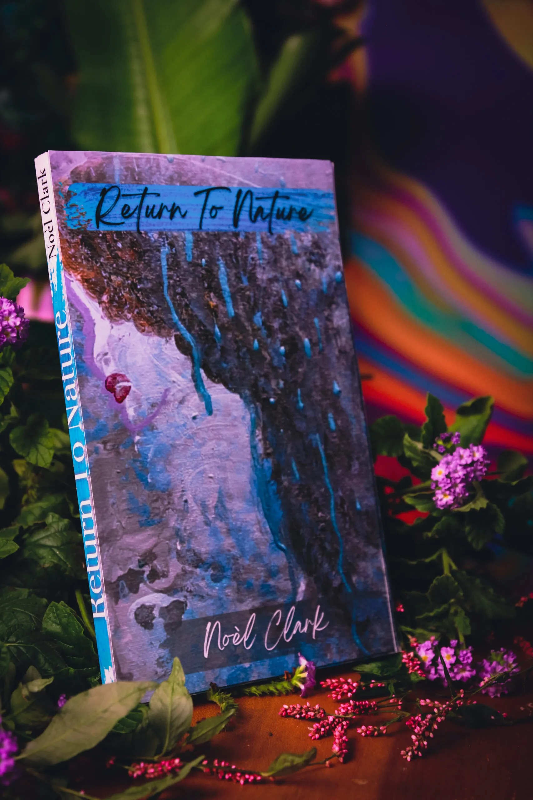
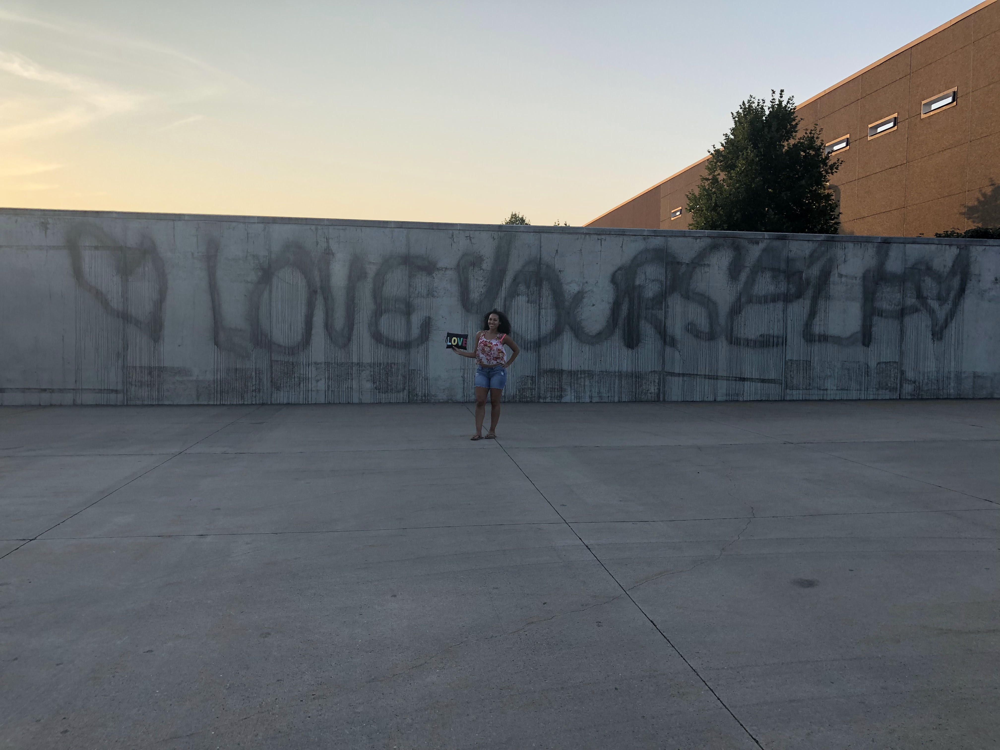
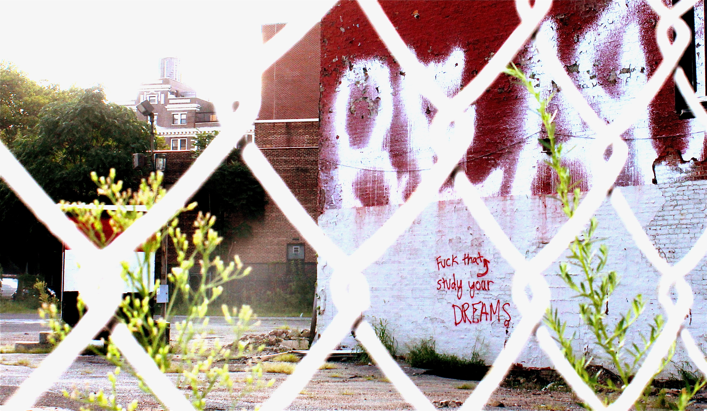

Noèl Clark
Life is a masterpiece. Niente nella vita è perfetto.
I'm also the author of , and I've been writing and creating here since .


NOELCLARK.COM · EST. 2010
I don't stick to one subject. I follow my curiosity.
I might begin with an ...
Excerpt from “The Invisible Thread”
To me, being vulnerable is one of the highest expressions of pure love — of yourself, of your life, of the people in it — because it means being willing to see what is true and then act on it, without any guarantee of how it will be received. The unchecked ego wants none of that. It is always grasping for an imagined kind of power, a false sense of control, and if you let it win, it will do the one thing it does best: sabotage you.
READ “THE INVISIBLE THREAD” →...which invariably leads me to remember a street corner whose architecture I was drawn to photograph for its perfect imperfections and ...

...which may draw me down a rabbit hole sparked by , which leads me to a ...

Rilke letter excerpt
HOVER TO TRANSLATE
TAP TO TRANSLATE
Niemand kann Ihnen raten und helfen, niemand. Es gibt nur ein einziges Mittel. Gehen Sie in sich. Erforschen Sie den Grund, der Sie schreiben heißt; prüfen Sie, ob er in der tiefsten Stelle Ihres Herzens seine Wurzeln ausstreckt, gestehen Sie sich ein, ob Sie sterben müßten, wenn es Ihnen versagt würde zu schreiben.
No one can advise you or help you, no one. There is only one way. Go into yourself. Explore the reason that commands you to write; examine whether it sends its roots into the deepest place of your heart. Admit to yourself whether you would have to die if you were forbidden to write.
...which inspires a piece of music, or a question whose answer leads to more .
Rilke letter — must I write?
HOVER TO TRANSLATE
TAP TO TRANSLATE
Dieses vor allem: fragen Sie sich in der stillsten Stunde Ihrer Nacht: muß ich schreiben? Graben Sie in sich nach einer tiefen Antwort. Und wenn diese zustimmend lauten sollte, wenn Sie mit einem starken und einfachen »Ich muß« dieser ernsten Frage begegnen dürfen, dann bauen Sie Ihr Leben nach dieser Notwendigkeit; Ihr Leben bis hinein in seine gleichgültigste und geringste Stunde muß ein Zeichen und Zeugnis werden diesem Drange.
Above all, ask yourself in the quietest hour of your night: must I write? Dig deep within yourself for an answer. And if that answer is yes, if you can meet this serious question with a strong and simple ‘I must,’ then build your life according to that necessity. Your life, even into its most ordinary and insignificant hour, must become a sign and testimony to this urge.
I need room to stretch my curiosities beyond boxes, categories, and algorithms.
I'm interested in the experience of being human: the stories that shape us, the threads that run between people who've never met, and what happens when you stay insatiably curious and .